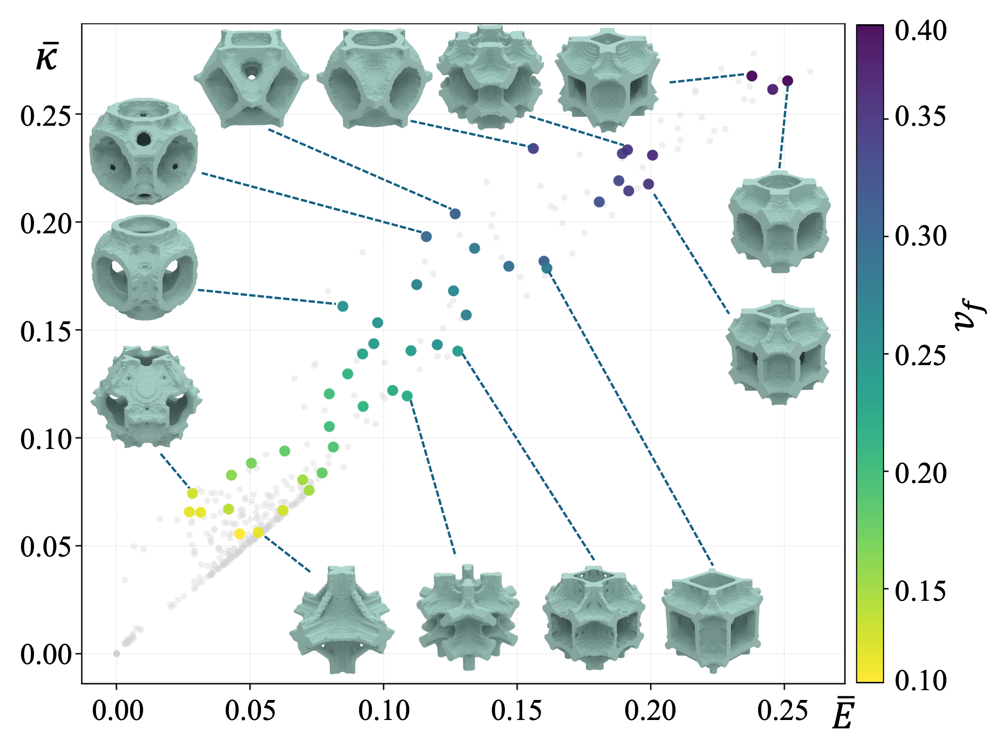
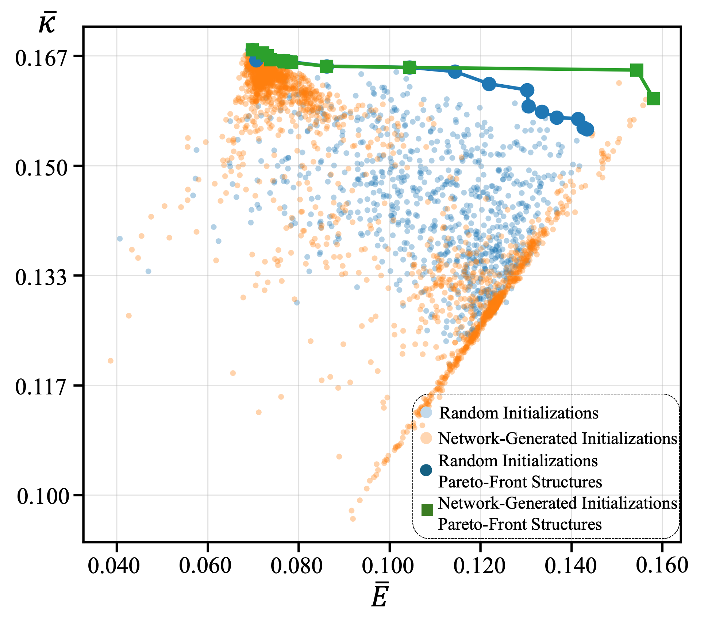
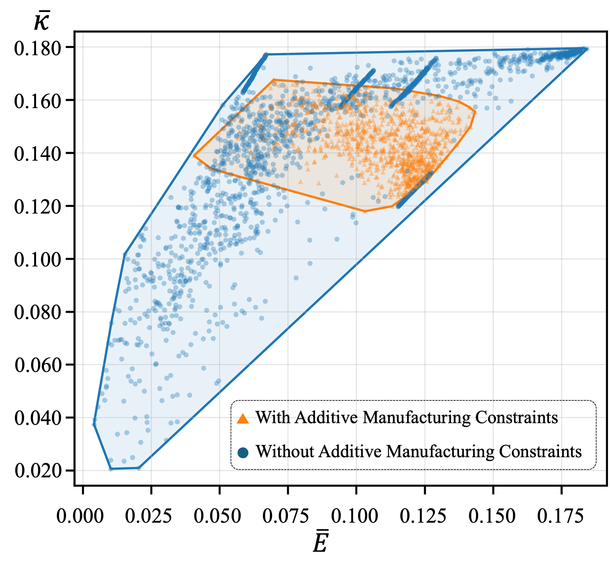
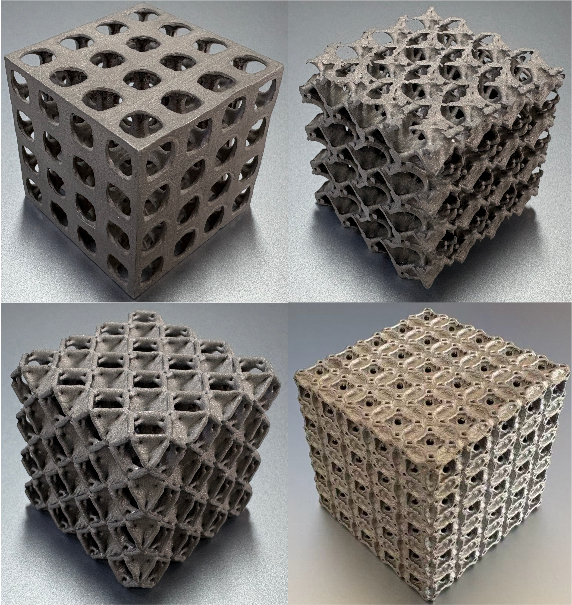

Lattice Structure Optimization for Additive Manufacturing:
Manufacturability-Driven Design and Pareto Front Construction
Abstract
Lattice metamaterials support lightweight and multifunctional structural design, while additive manufacturing enables the fabrication of complex lattice geometries. However, multiphysics lattice-unit-cell design for additive manufacturing remains challenging: mechanical and thermal objectives inherently conflict, and manufacturability constraints—including overhangs, enclosed cavities, and restricted powder-removal channels—substantially reduce the feasible design space. We propose a manufacturability-driven lattice optimization method that embeds differentiable manufacturing constraints into inverse-homogenization topology optimization, allowing multiphysics performance and manufacturability to be optimized jointly. We further develop a progressive Pareto-front construction mechanism. A target-performance-conditioned density generation network interpolates the latent representations of neighboring nondominated solutions and decodes them into initial density fields for optimization. Iteratively updating the network and the nondominated set progressively improves the coverage of manufacturable nondominated solutions. Experiments show that the method captures multiphysics trade-offs, substantially reduces manufacturing risks, and efficiently produces manufacturable nondominated designs.
Results

Optimized lattices reveal stiffness–thermal-conductivity trade-offs governed by volume fraction, with higher values strengthening solid pathways while reducing powder-removal space.

Under the same optimization budget, network initialization constructs a higher-quality nondominated front than random initialization.

Manufacturing constraints contract the attainable performance space while steering candidates toward designs that better satisfy practical additive-manufacturing requirements.

Manufacturing-constrained metal prints exhibit well-connected solid networks and open pore channels.
BibTeX
@article{xingTBDlattice,
title={Lattice Structure Optimization for Additive Manufacturing:
Manufacturability-Driven Design and Pareto Front Construction},
author={Xing, Yu and Liu, Yang and Lu, Lin},
journal={Journal of Computer-Aided Design \& Computer Graphics},
year={TBD},
doi={TBD},
url={TBD}
}